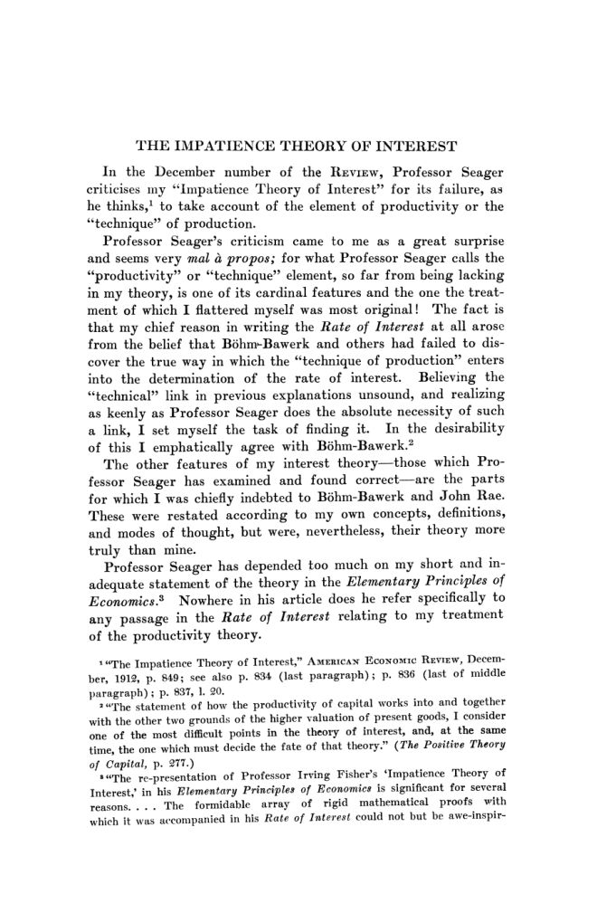

Fisher e Seager, 1913: onde entra a produtividade na teoria dos juros?
Leitura: 7 min
Seager acusara Fisher de deixar a produtividade fora da teoria da impaciência. Fisher responde que ela é a parte mais original de seu livro; Seager admite exagero, mas mantém a crítica.


Irving Fisher conta que a crítica o pegou de surpresa. Em dezembro de 1912, Henry R. Seager escrevera na American Economic Review que a teoria da impaciência deixava de fora a produtividade do capital, a técnica de produção. Para Fisher, era o contrário: aquele elemento não só estava em sua teoria como era o ponto em que ele se julgava mais original. A resposta, em setembro de 1913, ocupa nove páginas; a tréplica de Seager, menos de duas.
O que estava em jogo era antigo. Böhm-Bawerk dissera que a forma como a produtividade do capital se combina com as outras razões para valorizar mais os bens presentes era o ponto mais difícil da teoria dos juros e decidiria seu destino. Fisher escreveu The Rate of Interest, diz, justamente por achar que Böhm-Bawerk e outros não haviam encontrado o modo certo de fazer essa ligação.
De onde vinha o desencontro?
Fisher sustenta que Seager se apoiou demais no resumo da teoria em seu manual, os Elementary Principles of Economics. Lá, admite, a produtividade foi quase omitida, mas não por completo, por ser o ponto mais controverso da teoria e, portanto, impróprio para um livro-texto, opinião com a qual Seager parecia concordar. No livro maior, o tema ocupa os capítulos 8, 9, 10 e 13, além de um apêndice matemático.
O que Seager examinou e considerou correto, acrescenta Fisher, era a parte que ele devia a Böhm-Bawerk e a John Rae, reescrita com seus próprios conceitos. A contribuição própria estaria justamente no elemento técnico, que ele reconstruiu depois de criticar as teorias da produtividade correntes.
Como a produtividade entra na teoria?
Fisher não reexpõe a teoria e remete ao livro. Indica as passagens: a página 150 enumera as seis condições que, a seu ver, determinam a taxa de juros, e a quarta é a que trata da produtividade. Em forma breve, cada indivíduo escolhe, entre os fluxos de renda possíveis, o que tem o maior valor presente na sua estimativa; quando as alternativas variam de modo contínuo, isso equivale a igualar a taxa marginal de retorno sobre o sacrifício à taxa de juros.
A noção de fluxo de renda é o que liga as teorias anteriores. Decidir quando cortar uma floresta, quanto alongar um período de produção ou com que intensidade cultivar a terra, diz Fisher, são todos problemas de escolher o melhor entre inúmeros fluxos de renda possíveis, que diferem sobretudo na forma ao longo do tempo.
“embora a lentidão da natureza seja causa suficiente para os juros, sua produtividade é uma causa adicional.” (“while the slowness of Nature is a sufficient cause for interest, her productivity is an additional cause.”)
Fisher acrescenta um argumento de método. Pelo princípio, enfatizado por Marshall, Cournot, Walras e Pareto, de que um problema só é determinado quando há tantas condições independentes quanto incógnitas, o economista matemático dificilmente omite uma condição necessária: contar equações é uma verificação. Foi pela geometria, diz, que ele percebeu o alcance do que chamou de amplitude efetiva de escolha.
Mais produtividade eleva ou baixa os juros?
Fisher vê na crítica de Seager uma só questão substantiva. Seager acredita que dobrar a produtividade física de todo o capital elevaria muito a taxa de juros, porque, com o tempo, o valor dos instrumentos se ajustaria ao custo de produzi-los. Fisher acha que acabaria por baixá-la. A produtividade maior reduz o preço unitário dos produtos e pode encarecer a produção de capital; sobretudo, aumenta a renda da sociedade, e uma renda maior reduz a impaciência de quem a possui.
Enquanto os juros não caem até a nova impaciência, argumenta, continua lucrativo produzir capital, e o ajuste se faz pela queda do preço dos produtos ou pela alta do custo do capital. Dobrar a produtividade do capital existente seria, na prática, dobrar o próprio capital. Durante a transição, admite, citando o capítulo sobre invenções, os juros tendem a subir, mas não depois.
O segundo ponto é menor e diz respeito aos clientes de casas de penhor. Por que não tomam emprestado até baixar sua alta preferência pelo presente ao nível da taxa de mercado? Fisher atribui o limite principal à falta de garantias. Arrisca que 99 de cada 100 dessas pessoas se recusariam a empenhar toda a renda futura por dinheiro imediato, mesmo a 1%, se tivessem de dar garantia e soubessem que passariam fome.
Fisher responde ainda a objeções menores. A primeira aproximação de sua teoria, que supõe fluxos de renda dados, seria como o vácuo dos físicos no estudo da queda dos corpos, retirado na segunda e na terceira aproximações. Ele reconhece a possibilidade de juros negativos, que diz ter registrado já em 1896, e lembra o caso de marinheiros náufragos numa ilha deserta, só com bolacha, em que os juros seriam zero.
O que Seager respondeu?
Seager abre observando como é difícil a um economista acostumado a um método entrar plenamente em outro. Para ele, a produtividade sempre pareceu o aspecto mais óbvio e mais importante dos juros; para Fisher, um tema tão difícil que, depois de escrever um livro para mostrar seu lugar, quase o omitiu no segundo. Admite que as passagens citadas o mostram culpado de exagero ao dizer que Fisher ignorava a produtividade, mas mantém que o tratamento é incompleto e inadequado.
“pessoas imprevidentes não percebem plenamente as consequências futuras de seus atos!” (“improvident people do not "fully realize" the future consequences of their acts!”)
Sobre as casas de penhor, Seager diz que a ressalva de Fisher, de que as pessoas percebessem plenamente as consequências, é justamente o que falta aos imprevidentes; os esforços para proteger trabalhadores e pequenos assalariados de agiotas mostrariam que a estimativa de Fisher sobre a previdência das pessoas é otimista demais. Quanto ao método, lembra que Jevons afirmou que o valor depende inteiramente da utilidade: economistas matemáticos também veem um fator com tanta clareza que esquecem outros. E pede que os leitores da resposta de Fisher releiam o artigo original.
Na minha leitura
Na minha leitura, o debate mostra que os dois concordam mais do que dizem. Ambos aceitam que a técnica de produção entra na determinação dos juros; divergem sobre onde ela entra e com que sinal no longo prazo. Fisher a coloca dentro da escolha entre fluxos de renda, de modo que a produtividade atua ao alterar as oportunidades e, por meio da renda, a própria impaciência; Seager a vê como causa direta, ligada ao custo de reproduzir o capital.
A disputa sobre as casas de penhor é mais reveladora do que parece. Fisher supõe agentes que conhecem as consequências de seus empréstimos e são limitados por garantias; Seager supõe agentes que não as percebem. É a mesma divisão que hoje separa os modelos de escolha intertemporal com restrição de crédito dos que incorporam miopia ou desconto inconsistente.
Glossário
- Teoria da impaciência
- explicação de Fisher para os juros pela preferência por renda presente em relação à futura.
- Taxa marginal de retorno sobre o sacrifício
- em Fisher, o ganho futuro obtido por unidade de renda presente sacrificada, na margem.
- Fluxo de renda
- sequência de rendas ao longo do tempo associada a um uso do capital.
- Juros negativos
- situação em que o empréstimo devolve menos do que se emprestou.
- Primeira aproximação
- etapa da exposição de Fisher que supõe fluxos de renda dados, antes de introduzir a escolha produtiva.
Fontes
- The Impatience Theory of Interest; [The Impatience Theory of Interest]: Comment — Irving Fisher; comentário de Henry R. Seager (pp. 610–619). JSTOR · Internet Archive (PDF)
- Edição completa, com os demais artigos: Nº 125 do Arquivo.
Documento em domínio público (EUA, publicado antes de 1931), via JSTOR Early Journal Content e Internet Archive. Resumo e comentário do autor deste site, sem afiliação com a American Economic Association. Encontrou um erro? Escreva: a correção é publicada no próprio texto, com data.
← Stevens, 1913: sete tipos de pool e o que os acordos escondiam ↑ Nº 125 · Setembro de 1913: pools, dólar compensado e a teoria da impaciência